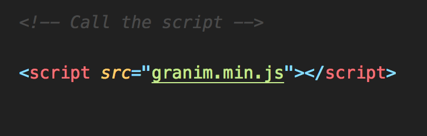
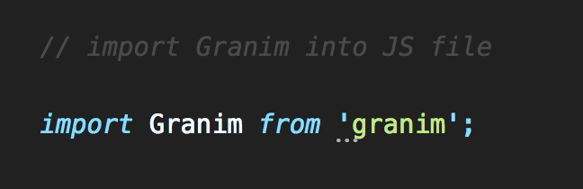
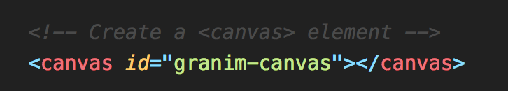
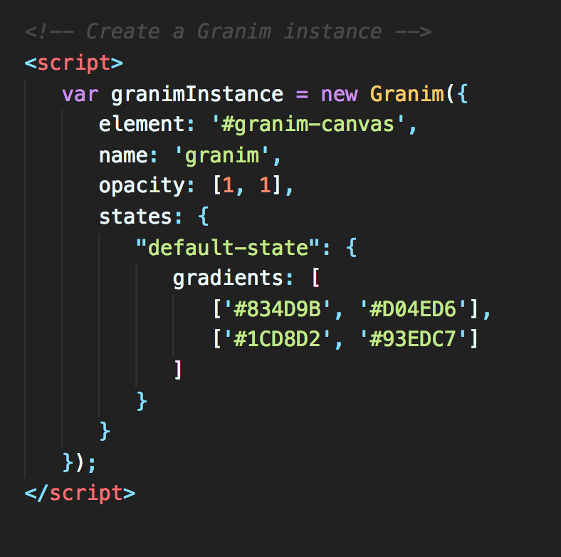

What is it?
Granim is a JavaScript library that allows you to create fluid and interactive gradient animations.
How do I use it?
-
First, navigate to the root of your project folder in the command line and enter:
-
Call the script in your index.html file OR import it into your app.js file
  -
In your index.html file, create a canvas element
 -
Within your script tags (or in a new JS file), create a new Granim Instance.

What can I do with it?
Well, let me tell you.